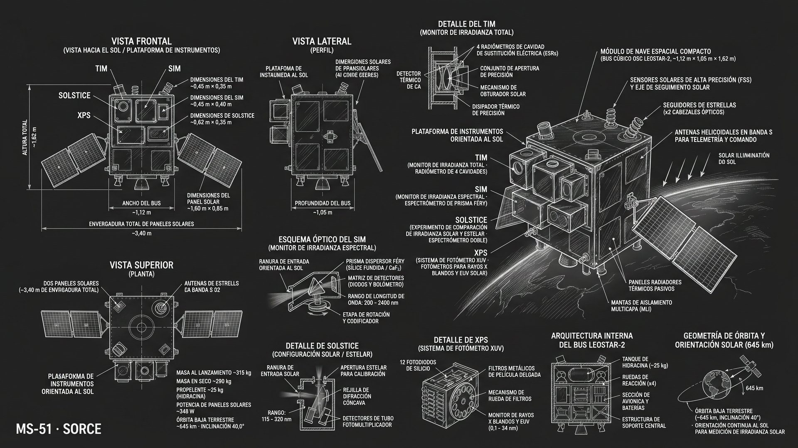

SORCE

Fue un satélite de la NASA financiado y operado por el LASP que midió la radiación solar que llega a la Tierra en rayos X, ultravioleta, visible, infrarrojo cercano y radiación total, con cuatro instrumentos. Funcionó más de diecisiete años, cubriendo dos ciclos solares, y fue pasivado en febrero de 2020.
Satélite pasivado el 25 de febrero de 2020 tras más de 17 años de observaciones de irradiancia solar total (TSI) y espectral (SSI) entre 1 y 2400 nm; el apagado fue un evento planificado después del solapamiento requerido con TSIS-1. Personas: Gary J. Rottman, Tom Woods, Thomas P. Sparn
Lo que hizo
- Lanzamiento en órbita baja — Despegó el 25 de enero de 2003 a bordo de un Pegasus XL lanzado desde un avión L-1011, y quedó en una órbita de 645 km de altura y 40 grados de inclinación.
- Fin tras 17 años de datos solares — La misión terminó el 25 de febrero de 2020 con más de diecisiete años de medidas de irradiancia total y espectral, tras el solapamiento con TSIS-1 en la Estación Espacial Internacional.
Modelo 3D, chat y cómic, en tres idiomas
Fuentes
- science.nasa.gov/mission/sorce/
- lasp.colorado.edu/sorce/
- nssdc.gsfc.nasa.gov/nmc/spacecraft/display.action?id=2003-004A
Ver el índice completo · Proyecto del NASA Space Apps Challenge 2026. Contenido con fuentes citadas.